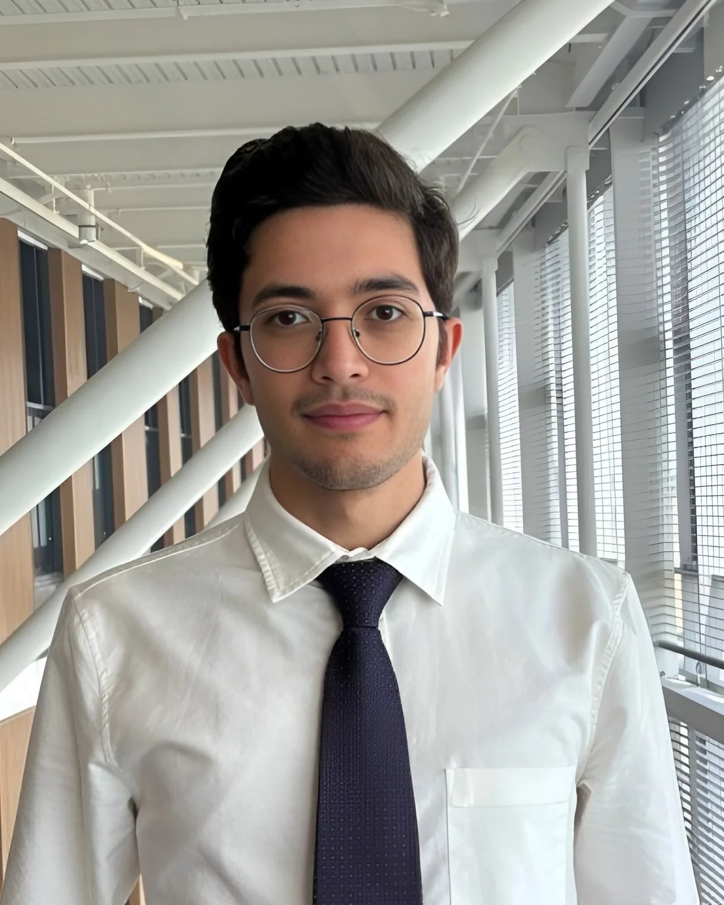

Experimental system development
Designing fixtures, test architectures, sensing arrangements, and integrated laboratory workflows.
About
I completed my bachelor's degree in aerospace engineering, and currently I am a graduate student at the University of Lethbridge, working in the instrumentation group in the physics and astronomy department. I am an aerospace engineer and experimental researcher working at the intersection of scientific instrumentation and computational engineering.

Professional narrative
My work is about answering the question: how can an engineering system be designed, measured, and validated with confidence to operate in a chosen environment?
I began with aerospace dynamics, control, materials, and computer-aided engineering. These areas serve as the basis cryogenic test systems, composite-material characterization, interferometry, vibration analysis, signal processing, and uncertainty quantification.
Across both laboratory and computational projects, I work through the complete engineering chain from defining the physical problem and designing hardware or models, to collecting data, developing analysis algorithm, validating results, and communicating the outcome through publications, posters, and technical documentation.
Core capabilities
Designing fixtures, test architectures, sensing arrangements, and integrated laboratory workflows.
Developing research hardware and assemblies with SolidWorks, engineering drawings, and design-for-test considerations.
Extracting physical information through FFT analysis, windowing, peak estimation, regression, and repeatability studies.
Working with interferometric surface measurement, laser displacement systems, and automated motion platforms.
Modelling rotational systems, guidance and control problems, and optimization-based engineering decisions.
Using independent methods, Monte Carlo propagation, reference materials, and physical consistency checks.
Research interests
My current research interests are in designing precise experimental systems operating in both room temperature and cryogenic environments for aerospace applications.
Scientific instrumentation, cryogenic materials, experimental measurement, and optical metrology.
Published optimization research on asteroid mineral extraction and rotational stability in IEEE Access.
Dynamics, control, propulsion materials, heat transfer, CAD, simulation, and space mission engineering.
Selected tools
Selected projects, publications, and experimental research are documented throughout this portfolio.